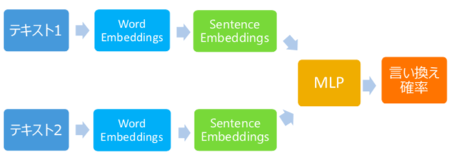

自己紹介
研究内容
医療ドメインの言い換え認識について研究しています。今の所、医療ドメインのテキストについて、与えられた文と同じ症例が書かれた文を抽出する、みたいなことをやってます
現在の状況
とりあえず言い換え認識モデルを作成して、どれをSentence Embeddingsに使うか迷っている状態
まずはAverage EmbeddingsとQuickThoughtを使ったEmbeddingについて検証した。(伸びしろなどを考えたらQuickThoughtの方が良さそう)
モデル全体像

今後
- QuickThoughtの学習コーパス増加
- もっと別のSentence Embedding手法を考えて検証
- 今回試した2つの手法を合わせてみる
- MLPを別のモデルに変えてみる(CNNとか)(前後の文脈を考慮させたい)
関連研究
- Sadid A. Hasan, Bo Liu, Joey Liu, Ashequl Qadir, Kathy Lee, Vivek Datla, Aaditya Prakash, Oladimeji Farri
Neural Clinical Paraphrase Generation with Attention. ACL, 2016
- Ellie Pavlick, Juri Ganitkevitch, Tsz Ping Chan, Xuchen Yao, Benjamin Van Durme,
Chris Callison-Burch,
Domain-Specific Paraphrase Extraction. ACL, 2015
- Wenpeng Yin, Hinrich Schutze
Convolutional Neural Network for Paraphrase Identification. NAACL, 2015